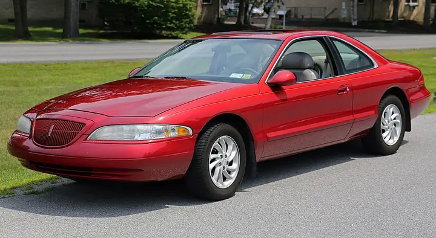
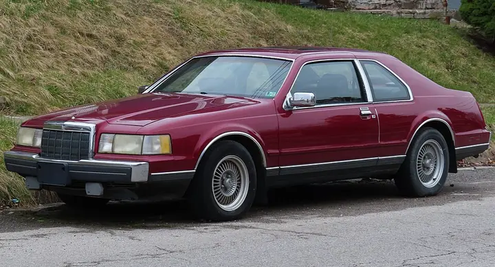
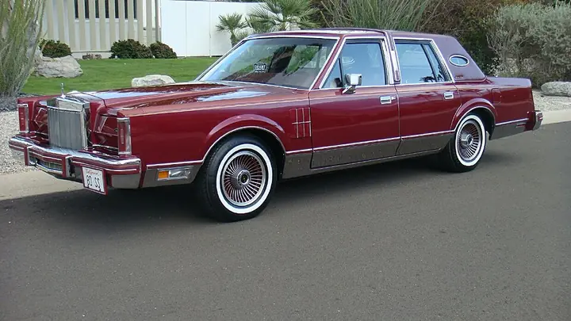
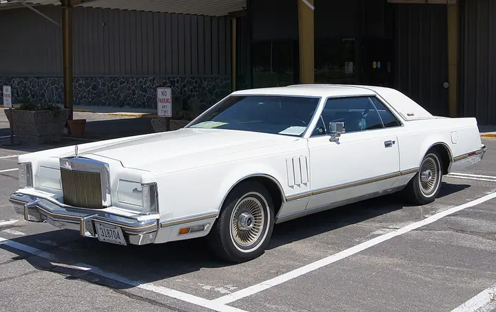
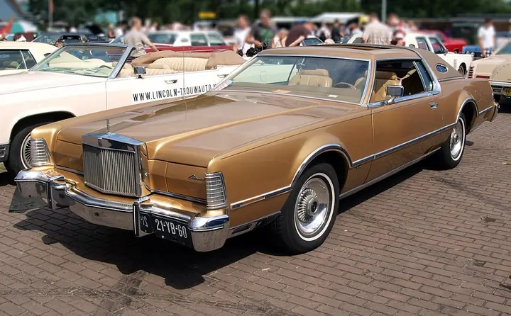
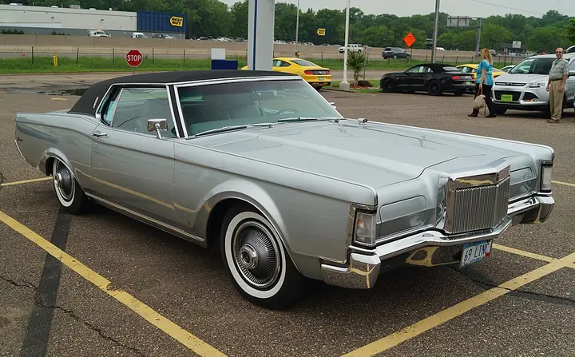

Lincoln Mark series
Seventh generation (Mark VIII; 1993–1998) · 1992–1998
Abstract
This generation of the Lincoln Mark series is a personal luxury car, built October 1992 – June 1998 in United States: Wixom, Michigan (Wixom Assembly Plant). Body styles: 2-door coupe. Layout: FR layout. Designed by Kyu Kim (1989). This generation has its own article: Lincoln Mark VIII.


1Specifications
| Production | October 1992 – June 1998 |
|---|---|
| Model years | 1993–1998 |
| Assembly | United States: Wixom, Michigan (Wixom Assembly Plant) |
| Designer | Kyu Kim (1989) |
| Class | Personal luxury car |
| Body style | 2-door coupe |
| Layout | FR layout |
| Platform | Ford FN10 platform |
| Engine | 4.6 L Intech V8 |
| Transmission | 4-speed automatic |
| Wheelbase | 113.0 in |
| Length | 1993–1994: 206.9 in1995–1996: 207.3 in1997–1998: 207.2 in |
| Width | 1993–1994: 74.6 in1995–1996: 74.8 in |
| Height | 53.6 in |
| Weight | 3757 lb4921 lb (GVW) |
| Related | Ford Thunderbird (tenth generation) |
| Predecessor | Lincoln Mark VII |
| Successor | Lincoln LS V8 |
2Versions
- 1997 facelift
3Previous generations





_(cropped).jpg){kind=link}



_(cropped).jpg){kind=link}
4Generation by generation
Length −4% from the first to the last
Mark III 19685,489 mm
Mark IV 19715,794 mm
Mark V 19775,850 mm
Mark VI 19805,486 mm
Mark VII 19835,151 mm
Mark VIII 19925,255 mm
Weight −23% from the first to the last
Mark III 19682,207 kg
Mark IV 19712,388 kg
Mark V 19772,160 kg
Mark VI 19801,765 kg
Mark VII 19831,700 kg
Mark VIII 19921,704 kg